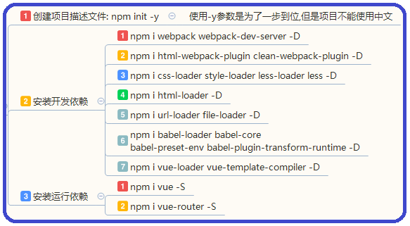
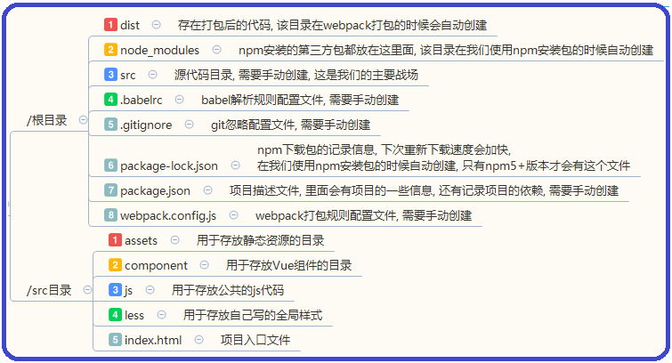
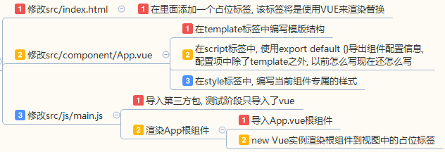
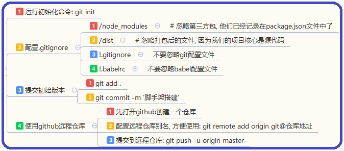

后台管理系统
资料
搭建vue开发环境
npm

目录结构

打包配置
babel配置 - .babelrc
{
"presets": ["env"],
"plugins": ["transform-runtime"]
}
webpack配置 - webpack.config.js
const path = require('path');
const htmlWebapckPlugin = require('html-webpack-plugin');
// 配置文件要求我们必须导出一个配置对象
module.exports = {
// 入口
entry: path.resolve(__dirname, './src/js/main.js'),
// 输出
output: {
path: path.resolve(__dirname, './dist'),
filename: 'bundle_[chunkhash:8].js'
},
// 插件配置
plugins: [
// 自动注入打包好的js文件到body里
new htmlWebapckPlugin({
template: './src/index.html', // 要处理的html
filename: 'index.html', // 处理后的html名称
inject: 'body', // 自动注入js到什么地方
}),
],
// loader的作用是为了让webpack可以打包其他类型的模块
module: {
// 配置loader, 该配置选项是必须的
rules: [
// 打包css
{
test: /\.css$/,
use: ['style-loader', 'css-loader']
},
// 打包less
{
test: /\.less$/,
use: ['style-loader', 'css-loader', 'less-loader']
},
// 打包url文件
{
test: /\.(png|jpg|gif|jpeg|svg)$/,
use: [
// 指定小于10kb的图片才转为base64编码打包
{loader: 'url-loader', options: {limit: 10240}}
]
},
// 转换特殊语法编写的js文件
{
test: /\.js$/,
use: ['babel-loader'],
exclude: /node_modules/ // 如果项目引入了node-modules的东西,不转换它们
},
// 解析vue文件
{
test: /\.vue$/,
use: ['vue-loader']
}
]
},
// webpack-dev-server工具配置
devServer: {
contentBase: 'dist',
port: 7777,
open: true,
inline: true,
progress: true,
}
};
环境测试
步骤预览

index.html
<!DOCTYPE html>
<html lang="en">
<head>
<meta charset="UTF-8">
<meta name="viewport" content="width=device-width, initial-scale=1.0">
<meta http-equiv="X-UA-Compatible" content="ie=edge">
<title>Document</title>
</head>
<body>
<div id="app"></div>
</body>
</html>
main.js
- 这里主要是把
根组件渲染到页面中 - 其中
render配置项的作用与template一样, 用来指定模版, 使用了vue-loader就必须使用它替代template - 可以参考官方文档
// 导入Vue库
import Vue from 'Vue';
// 导入根组件
import App from '../component/App.vue';
// 渲染根组件到占位标签上
new Vue({
el: '#app',
render(createElement) {
return createElement(App);
}
});
App.vue
<template>
<main>
<h1>{{ title }}</h1>
</main>
</template>
<script>
// 导出组件配置
export default {
data() {
return {
title: 'Hello World!'
}
}
}
</script>
<style scoped>
h1 {
font-size: 30px;
color: red;
}
</style>
git版本管理
操作

.gitignore预览
# 忽略第三方包, 他们已经记录在package.json文件中了
node_modules/
# 忽略打包后的文件, 因为我们的项目核心是源代码
dist/
# 忽略隐藏文件
.*
# 不忽略git配置文件和babel配置文件
!.gitignore
!.babelrc
集成vue-router
- why? 页面的切换由前端来控制, 需要前端路由插件来完成
安装
- 命令:
npm i vue-router -S
创建测试组件
- 首页组件
src/component/home/Home.vue - 登陆组件
src/component/login/Login.vue - 注册组件
src/component/register/Register.vue
编写路由配置
- 创建
src/router/router.js, 专门配置路由 - 此模块最终向外
导出整个路由配置, 供外界使用
// 导入受路由控制的组件
import HomeComponent from '../component/home/Home.vue';
import LoginComponent from '../component/login/Login.vue';
import RegisterComponent from '../component/register/Register.vue';
// 导出路由配置
export default {
routes: [
// 首页
{ path: "/", redirect: "/home" },
{ name: "h", path: "/home", component: HomeComponent },
// 登陆注册
{ name: "l", path: "/login", component: LoginComponent },
{ name: "r", path: "/register", component: RegisterComponent },
]
};
启用路由
- 在
src/main.js中导入路由插件, 使用use方法启用 - 然后再导入
路由配置, 配置router选项
// 1.1 导入第三方库
import Vue from 'Vue';
import VueRouter from 'vue-router';
// 1.2 启动Vue插件
Vue.use(VueRouter);
// 2.1 导入根组件
import AppComponent from './component/App.vue';
// 2.2 导入路由配置
import routerConfig from './router';
// 挂载根组件, 启动应用
new Vue({
el: '#app',
render: c => c(AppComponent),
router: new VueRouter(routerConfig)
});
测试
- 修改
src/component/app.vue - 使用
router-view标签进行路由占位
<template>
<main>
<router-view></router-view>
</main>
</template>
集成axios与api配置
- why? 每个页面的
数据都是动态的, 需要调用接口, 所以要集成http请求库
安装
- 命令:
npm i axios -S
配置api
- 创建
src/js/api_config.js, 用于存储接口地址 - 因为接口有很多, 且不容易记忆, 所以我们创建这个模块存储它
- 该模块对外
导出一个对象,key为接口名称,value为接口地址
// 导出域名
export const domain = 'http://157.122.54.189:9095';
// 默认导出整个接口配置
export default {
// 账号管理
login: `/admin/account/login`, // 登陆
logout: `/admin/account/logout`, // 登出
islogin: `/admin/account/islogin`, // 是否登陆状态
// 类别管理
ctList: `/admin/category/getlist/`, // 获取分类列表, 需要参数: tablename
ctDetail: `/admin/category/getcategorymodel/`, // 获取分类详情, 需要参数: cateID
ctEdit: `/admin/category/edit/`, // 编辑分类, 需要参数: cateID
ctAdd: `/admin/category/add/`, // 添加分类, 需要参数: tablename
// 文章管理
atList: `/admin/article/getlist/`, // 获取文章列表, 需要参数: tablename, 需要查询: pageIndex 与 pageSize
atCate: `/admin/article/getcategorylist/`, // 获取文章的分类列表, 需要参数: tablename
atDetail: `/admin/article/getarticle/`, // 获取文章详情, 需要参数: tablename 与 atID
atEdit: `/admin/article/edit/`, // 编辑文章, 需要参数: tablename 与 atID
atDdd: `/admin/category/add/`, // 添加文章, 需要参数: tablename
atDel: `/admin/category/del/`, // 删除文章, 需要参数: tablename 与 atID
// 文章上传
atImg: `/admin/article/uploadimg`, // 上传文章图片
atFile: `/admin/article/uploadfile` // 上传文章附件
// 商品管理
gsList: `/admin/goods/getlist/`, // 获取商品列表, 需要查询: pageIndex 与 pageSize 与 searchvalue
gsDetail: `/admin/goods/getgoodsmodel/`, // 获取商品详情, 需要参数: gsID
gsEdit: `/admin/goods/edit/`, // 编辑商品, 需要参数: gsID
gsAdd: `/admin/goods/add/`, // 添加商品
gsDel: `/admin/goods/del/`, // 删除商品, 需要参数: gsID
// 订单管理
odList: `/admin/order/getorderlist`, // 获取订单列表, 需要查询: pageIndex 与 pageSize 与 orderstatus 与 vipname
odDetail: `/admin/order/getorderdetial/` // 获取订单详情, 需要参数: odID
odEdit: `/admin/order/updateorder/` // 编辑订单
}
配置axios
- 创建
src/axios_config.js - 对
axios进行一些配置, 然后导出配置后的axios
// 导入axios与接口域名
import axios from 'axios';
import { domain } from './api_config.js';
// 配置默认域名, 这样请求的时候就不用在url里加域名了
axios.defaults.baseURL = domain;
// 我们是跨域请求的接口, 默认不会携带cookie等信息, 后端需要这些信息来判断登陆状态, 所以要设为true
axios.defaults.withCredentials=true;
// 导出配置后的axios
export default axios;
vue中注入axios与api
- 修改
src/main.js - 因为
axios不是vue插件, 那个模块使用它, 必须先在那个模块里进行导入 - 为了使用方便, 我们把
axios加到vue的原型中, 这样组件的实例就可以通过this来调用它了 - 同样的, 为了方便拿到
api, 我们把它也一起注入到 vue 原型当中
// 3.1 导入配置后的axios与api, 并注入到Vue原型中 将来在实例通过this.$http调用
import axios from './js/axios_config.js';
import api from './js/api_config.js';
Vue.prototype.$http = axios;
Vue.prototype.$api = api;
// 渲染根组件, 启动项目
new Vue({
el: '#app',
render(createNode) {
return createNode(AppComponent);
},
router: new VueRouter(routerConfig)
});
测试
- 修改
src/component/login/login.vue - 在这里调用
登陆与登陆判断接口进行测试
<template>
<div>
<button @click="login">登陆</button>
<button @click="isLogin">登陆检测</button>
</div>
</template>
<script>
export default {
data() {
return {
user: {
uname: "admin",
upwd: "123456"
}
};
},
methods: {
// 登陆
login() {
this.$http.post(this.$api.login, this.user)
.then(rsp => alert(rsp.data.message.realname));
},
// 判断是否已登陆
isLogin() {
this.$http.get(this.$api.islogin)
.then(rsp => alert(rsp.data.code));
}
}
}
</script>
集成element-ui
- 我们采用一个
Vue组件库element-ui来辅助项目开发 - 官方文档
安装
- 命令:
npm i element-ui -S
启用
- 修改
src/js/main.js, 在这里导入element-ui与样式文件 - 然后使用
use方法启用即可使用element-ui提供的各种组件
// 1.1 导入第三方库
import Vue from 'Vue';
import VueRouter from 'vue-router';
import ElementUI from 'element-ui';
import 'element-ui/lib/theme-chalk/index.css'
// 1.2 启动Vue插件
Vue.use(VueRouter);
Vue.use(ElementUI);
// 2.1 导入根组件
import AppComponent from './component/App.vue';
// 2.2 导入路由配置
import routerConfig from './router';
// 3.1 导入配置后的axios, 并注入到Vue原型中
import axios from './js/axios_config.js';
Vue.prototype.$http = axios;
// 渲染根组件, 启动项目
new Vue({
el: '#app',
render: c => c(AppComponent),
router: new VueRouter(routerConfig)
});
webpack配置
element-ui里的样式文件会引用两种字体文件:woff与ttf- 我们需要在
webpack.config.js文件里添加对应配置, 否则打包会报错
module: {
rules: [
// 打包引用的静态资源文件
{
test: /\.(png|jpg|gif|jpeg|svg|woff|ttf)$/,
use: [
// 指定小于10kb的图片才转为base64编码打包
{loader: 'url-loader', options: {limit: 10240}}
]
},
]
}
测试
- 修改
src/component/home/Home.vue - 随便找个
element-ui组件进行测试, 这里使用了一个日期组件
<template>
<div>
<h1>首页</h1>
<el-date-picker
v-model="value"
align="right"
type="date"
placeholder="选择日期"
:picker-options="pickerOptions">
</el-date-picker>
</div>
</template>
<script>
import apiConfig from '../../js/api_config.js';
export default {
data() {
return {
value: '',
pickerOptions: {
// 大于今天的日期不能选
disabledDate(time) {
return time.getTime() > Date.now();
}
}
};
}
}
</script>
集成normalize.css与全局样式
- 我们需要这个类库让浏览器的默认样式保持一致
- 官方文档
安装
- 命令:
npm i normalize.css -S
全局样式
- 创建
src/less/index.less, 该文件用于设置全局样式
html, body, main {
min-height: 100%;
height: 100%;
}
// a标签默认白色, 无装饰
a {
color: #fff;
text-decoration: none;
}
// 左侧导航
.aside {
// 文本超出不出现滚动条
overflow: initial;
// 去掉导航右边框
.el-menu {
border-right: 0;
}
// 去掉导航子标题高度
.el-menu-item-group__title {
padding: 0;
height: 0;
}
}
使用默认样式与全局样式
- 修改
src/js/main.js, 在这里导入normalize.css与index.less即可
// 1.1 导入第三方库
import Vue from 'Vue';
import VueRouter from 'vue-router';
import Vuex from 'vuex';
import ElementUI from 'element-ui';
import 'element-ui/lib/theme-chalk/index.css';
import 'normalize.css';
// 1.2 启动Vue插件
Vue.use(VueRouter);
Vue.use(Vuex);
Vue.use(ElementUI);
// 1.3 导入全局样式
import './less/index.less';
登陆页
- 修改
src/component/login/Login.vue - 表单组件文档
<template>
<div class="login">
<!-- 居中的容器 -->
<div class="login_content">
<!-- Logo -->
<div class="login_content_logo">
<img src="../../img/logo.png" alt="logo">
</div>
<!-- Form表单: 如果需要表单效验与重置功能, 需要设置model属性为整个表单数据 -->
<el-form class="login_content_form" :model="user" :rules="loginFormRules"
status-icon ref="ruleLoginForm" label-width="70px" label-position="left" >
<!-- 用户名: 表单效验与重置, 需要设置prop属性为表单字段 -->
<el-form-item label="用户名" prop="uname">
<!-- 用户名输入框: 这里的v-model记得关联表单字段 -->
<el-input type="password" v-model="user.uname" auto-complete="off"></el-input>
</el-form-item>
<!-- 密码: 表单效验与重置, 需要设置prop属性为表单字段 -->
<el-form-item label="密码" prop="upwd">
<!-- 密码输入框: 这里的v-model记得关联表单字段 -->
<el-input type="password" v-model="user.upwd" auto-complete="off"></el-input>
</el-form-item>
<!-- 按钮 -->
<el-form-item>
<el-button @click="submitForm('ruleLoginForm')">提交</el-button>
<el-button @click="resetForm('ruleLoginForm')">重置</el-button>
</el-form-item>
</el-form>
</div>
</div>
</template>
<script>
export default {
data() {
return {
// 该数据将来提交给后端接口, 所以字段名必须与接口文档描述一致
user: {
uname: "admin",
upwd: "123456"
},
// 表单校验规则
loginFormRules: {
uname: [
{ required: true, message: '请输入用户名', trigger: 'blur' },
{ pattern: /\w{4,18}/, message: '长度在 4 到 18 个字符, 且只能为字母或数字', trigger: 'blur' }
],
upwd: [
{ required: true, message: '请输入密码', trigger: 'blur' },
{ pattern: /.{6,18}/, message: '长度在 6 到 18 个字符', trigger: 'blur' }
]
}
};
},
methods: {
// 登陆
login() {
// 登陆成功后
// 1 判断status是否为0, 不为0给出错误提示
// 2 如果为0, 说明登陆成功, 本地localStorage存储后端返回的用户信息
// 3 跳转到后台管理首页
this.$http.post(this.$api.login, this.user)
.then(rsp => {
let {status, message} = rsp.data; // 解构赋值的方式提取两个属性
if(status == 0) {
localStorage.setItem('user', JSON.stringify(message)); // 需要转换为字符串存储
this.$router.push('/');
}else {
alert('哥们你确实逗我呢!')
}
});
},
// 点击提交按钮, 先做表单校验, 校验通过后才可登陆
submitForm(formName) {
this.$refs[formName].validate((result) => {
if(result) {
this.login();
}else {
alert('哥们你逗我呢!')
}
});
},
// 重置表单
resetForm(formName) {
this.$refs[formName].resetFields();
}
}
}
</script>
<style scoped lang="less">
.login {
height: 100%;
background-color: rgb(38, 124, 183);
// 使盒子处于页面中间偏上的位置
&_content {
width: 400px;
position: absolute;
top: 50%;
left: 50%;
margin-left: -200px;
margin-top: -170px;
// logo居中
&_logo {
text-align: center;
padding-bottom: 10px;
}
// form表单添加背景与圆角边框
&_form {
padding: 30px 10px 10px;
background-color: #fff;
border: 1px solid hsla(0,0%,100%,.2);
border-radius: 10px;
}
}
}
</style>
后台管理页面架构
- 创建
src/component/admin/Admin.vue - 这个组件是
后台管理系统的架构, 在这里实现公共的左侧与头部组件 - 对于
不同的页面内容部分, 将来通过路由动态切换不同组件进行渲染 - 布局容器组件文档
<template>
<el-container>
<!-- 左侧 -->
<el-aside width="200px">
<!-- 左侧导航, 公共部分 -->
<app-aside></app-aside>
</el-aside>
<!-- 右侧 -->
<el-container>
<!-- 右侧头部, 公共部分 -->
<el-header>Header</el-header>
<!-- 右侧主体, 变化部分, 将来要通过子路由控制 -->
<el-main>Main</el-main>
</el-container>
</el-container>
</template>
<script>
// 导入公共的左侧与头部组件, 需要注册才能使用
import AsideComponent from './frame/Aside.vue';
import HeaderComponent from './frame/Header.vue';
export default {
// 注册子组件, key为组件名称(将=使用时的标签名称), value为未注册的组件
components: {
'app-aside': AsideComponent,
'app-header': HeaderComponent,
}
}
</script>
<style scoped lang="less">
// 页面架构高度固定, 左侧与右侧高度独自控制
.el-container {
height: 100%;
// 左侧导航
.el-aside {
height: 100%;
background-color: #D3DCE6;
color: #333;
}
// 右侧
.el-container {
height: 100%;
// 右侧头部
.el-header {
background-color: #B3C0D1;
color: #333;
line-height: 60px;
}
// 右侧主体
.el-main {
background-color: #E9EEF3;
color: #333;
}
}
}
</style>
公共左侧导航
- 创建
src/component/admin/frame/Aside.vue - 因为
aside 组件是admin 组件的公共架构部分, 所以把它创建在admin/frame里 - 导航菜单组件文档
<template>
<div class="aside">
<!-- logo -->
<div class="aside_logo">
<img src="../../../img/logo.png" alt="logo">
</div>
<!-- nav: default-active属性用来设置默认打开的菜单 -->
<el-menu default-active="2" class="aside_menu"
background-color="#545c64" text-color="#fff" active-text-color="#ffd04b">
<!-- subnav: key属性需要一个唯一值用于for循环渲染时性能优化, index属性同样需要一个唯一值用于展开导航列表 -->
<el-submenu v-for="item in menu" :key="item.title" :index="item.title">
<!-- nav_title -->
<template slot="title">
<i class="el-icon-menu"></i>
<span>{{ item.title }}</span>
</template>
<!-- nav_item -->
<el-menu-item v-for="subItem in item.submenu" :key="subItem.text" :index="subItem.text">
<!-- 每个子title都是一个a链接, 可以点击, 所以使用router-link, 记得设置to属性 -->
<router-link :to="subItem.path">
<i class="el-icon-document"></i>
<span>{{ subItem.text }}</span>
</router-link>
</el-menu-item>
</el-submenu>
</el-menu>
</div>
</template>
<script>
export default {
data() {
return {
menu: [
{ title: '学员问题', submenu:
[
{ text: '内容管理', path: '/' },
{ text: '类别管理', path: '/' },
{ text: '评论管理', path: '/' },
]
},
{ title: '前端技术', submenu:
[
{ text: '内容管理', path: '/' },
{ text: '类别管理', path: '/' },
{ text: '评论管理', path: '/' },
]
},
{ title: '难点答疑', submenu:
[
{ text: '内容管理', path: '/' },
{ text: '类别管理', path: '/' },
{ text: '评论管理', path: '/' },
]
},
{ title: '资源下载', submenu:
[
{ text: '内容管理', path: '/' },
{ text: '类别管理', path: '/' },
{ text: '评论管理', path: '/' },
]
},
{ title: '商品管理', submenu:
[
{ text: '内容管理', path: '/' },
{ text: '类别管理', path: '/' },
{ text: '评论管理', path: '/' },
]
},
{ title: '订单管理', submenu:
[
{ text: '订单列表', path: '/' },
]
},
]
}
}
}
</script>
<style scoped lang="less">
// 让导航列表撑满屏幕
.aside {
height: 100%;
text-align: left;
background-color: rgb(84, 92, 100);
// logo居中显示
&_logo {
text-align: center;
}
// 去掉导航展开时右边的1像素边框
.el-menu {
border-right: 0;
// 去掉导航列表的最小宽度限制
&-item {
min-width: 0;
}
}
}
</style>
公共右侧头部
- 创建
src/component/admin/frame/Header.vue - 因为
header 组件也是admin 组件的公共架构部分, 所以把它也创建在admin/frame里 - 下拉菜单组件文档
<template>
<div class="header">
<!-- 下拉菜单: command属性用来监听菜单点击事件, 事件回调里会收到被点击菜单的标识符 -->
<el-dropdown @command="handleCommand">
<!-- 菜单标题 -->
<span class="el-dropdown-link">
<span>你好, {{ username }}</span>
<i class="el-icon-arrow-down el-icon--right"></i>
</span>
<!-- 菜单列表 -->
<el-dropdown-menu slot="dropdown">
<el-dropdown-item>修改密码</el-dropdown-item>
<!-- 记得设置command指令值, 不然无法区分点击的是那个菜单 -->
<el-dropdown-item command="logout">注销</el-dropdown-item>
</el-dropdown-menu>
</el-dropdown>
</div>
</template>
<script>
export default {
data() {
return {
username: 'admin'
}
},
methods: {
// 注销
logout() {
// 注销成功后
// 1 清除localStorage存储的用户信息
// 2 跳转到登陆页
this.$http.get(this.$api.logout)
.then(rsp => {
localStorage.removeItem('user');
this.$router.push('/login');
});
},
// 下拉菜单控制器
handleCommand(command) {
switch (command) {
case 'logout':
this.logout();
break;
}
}
}
}
</script>
<style scoped lang="less">
.header {
text-align: right;
}
</style>
商品模块路由配置
- 商品模块
属于admin的一部分, 所以相关组件在admin目录中创建 - 同时商品模块也会配置成
admin组件的子路由
创建商品相关组件
- 商品内容列表
src/component/admin/goods/content/GoodsContentList.vue - 商品内容添加
src/component/admin/goods/content/GoodsContentAdd.vue - 商品内容编辑
src/component/admin/goods/content/GoodsContentEdit.vue - 商品分类列表
src/component/admin/goods/category/GoodsContentList.vue - 商品分类添加
src/component/admin/goods/category/GoodsContentAdd.vue - 商品分类编辑
src/component/admin/goods/category/GoodsContentEdit.vue - 商品评论列表
src/component/admin/goods/comment/GoodsContentList.vue - 商品评论编辑
src/component/admin/goods/comment/GoodsContentEdit.vue ;
;
创建商品路由配置文件
- 创建
src/js/router/goods.js - 该模块向外
导出商品路由配置对象
// 商品管理模块组件
import GoodsContentListComponent from '../component/admin/goods/content/GoodsContentList.vue';
import GoodsContentAddComponent from '../component/admin/goods/content/GoodsContentAdd.vue';
import GoodsContentEditComponent from '../component/admin/goods/content/GoodsContentEdit.vue';
import GoodsCategoryListComponent from '../component/admin/goods/category/GoodsCategoryList.vue';
import GoodsCategoryAddComponent from '../component/admin/goods/category/GoodsCategoryAdd.vue';
import GoodsCategoryEditComponent from '../component/admin/goods/category/GoodsCategoryEdit.vue';
import GoodsCommentListComponent from '../component/admin/goods/comment/GoodsCommentList.vue';
import GoodsCommentEditComponent from '../component/admin/goods/comment/GoodsCommentEdit.vue';
module.exports = [
// 商品管理
{ name: "gctl", path: "goods/content/list", component: GoodsContentListComponent },
{ name: "gcta", path: "goods/content/add", component: GoodsContentAddComponent },
{ name: "gcte", path: "goods/content/edit", component: GoodsContentEditComponent },
// 商品分类管理
{ name: "gcgl", path: "goods/category/list", component: GoodsCategoryListComponent },
{ name: "gcga", path: "goods/category/add", component: GoodsCategoryAddComponent },
{ name: "gcge", path: "goods/category/edit", component: GoodsCategoryEditComponent },
// 商品评论管理
{ name: "gcml", path: "goods/comment/list", component: GoodsCommentListComponent },
{ name: "gcme", path: "goods/comment/edit", component: GoodsCommentEditComponent },
];
商品路由配置
- 修改
src/js/router/index.js 导入商品模块相关路由配置, 然后配置成admin组件的子路由
// 导入子路由商品模块的配置
import goodsRouterConfig from './goods.js';
// 导出路由配置
export default {
routes: [
// 后台管理
{ path: "/", redirect: "/admin" },
{ name: "a", path: "/admin", component: AdminComponent,
// 子路由
children: [
// 商品模块
...goodsRouterConfig
]
},
// 账号管理
{ name: "l", path: "/login", component: LoginComponent },
{ name: "r", path: "/register", component: RegisterComponent },
]
};
更新左侧导航
- 修改
src/component/admin/frame/Aside.vue - 更新
menu导航数据里的path
<script>
export default {
data() {
return {
menu: [
{ title: '学员问题', submenu:
[
{ text: '内容管理', path: '/admin/student/content/list' },
{ text: '类别管理', path: '/admin/student/category/list' },
{ text: '评论管理', path: '/admin/student/comment/list' },
]
},
{ title: '前端技术', submenu:
[
{ text: '内容管理', path: '/admin/web/content/list' },
{ text: '类别管理', path: '/admin/web/category/list' },
{ text: '评论管理', path: '/admin/web/comment/list' },
]
},
{ title: '难点答疑', submenu:
[
{ text: '内容管理', path: '/admin/difficulty/content/list' },
{ text: '类别管理', path: '/admin/difficulty/category/list' },
{ text: '评论管理', path: '/admin/difficulty/comment/list' },
]
},
{ title: '资源下载', submenu:
[
{ text: '内容管理', path: '/admin/assets/content/list' },
{ text: '类别管理', path: '/admin/assets/category/list' },
{ text: '评论管理', path: '/admin/assets/comment/list' },
]
},
{ title: '商品管理', submenu:
[
{ text: '内容管理', path: '/admin/goods/content/list' },
{ text: '类别管理', path: '/admin/goods/category/list' },
{ text: '评论管理', path: '/admin/goods/comment/list' },
]
},
{ title: '订单管理', submenu:
[
{ text: '订单列表', path: '/admin/order/content/list' },
]
},
]
}
}
}
</script>
登陆状态校验
- 目前用户在
未登录状态下可直接通过url打开后台管理页面, 这显然是不合理的行为, 所以需要进行处理
不同页面处理逻辑

编写路由守卫
- 创建
src/js/router/guard.js - 该模块向外
导出一个路由守卫函数, 在切换页面时进行登陆校验处理
import axios from 'axios';
import apiConfig from '../js/api_config.js';
// 导出一个全局的路由守卫对象
export default function(to, from, next) {
// 实现步骤:
// 1. 请求接口判断当前是否处于登陆状态(也可以通过cookie判断)
// 2. 通过to对象的name属性得知用户去往的页面
// 2.1 如果去往登陆页面
// 2.2 已登陆 -> 自动跳转到首页 -> 调next('/')
// 2.3 未登陆 -> 允许访问 -> 调next()
// 3.1 如果去往非登陆页面
// 3.2 已登陆 -> 允许访问 -> 调next()
// 3.3 未登陆 -> 自动跳转到登陆页 -> 调next('/login')
axios.get(apiConfig.isLogin).then(rsp => {
let logined = rsp.data.code == 'logined';
// 去往登陆页
if(to.name === 'l') {
if(logined) {
next('/');
}else {
next();
}
}
// 去往非登陆页
if(to.name !== 'l') {
if(logined) {
next();
}else {
next('/login');
}
}
});
};
启动路由守卫
- 修改
src/mian.js 导入路由守卫函数, 然后通过路由实例的beforeEach方法启动守卫
// 2.1 导入根组件
import AppComponent from './component/App.vue';
// 2.2 导入路由配置与路由守卫, 创建路由实例
import routerConfig from './router';
import routerGuard from './router/guard.js';
let vueRouter = new VueRouter(routerConfig);
vueRouter.beforeEach(routerGuard);
// 3.1 导入配置后的axios与api, 并注入到Vue原型中
import axios from './js/axios_config.js';
import api from './js/api_config.js';
Vue.prototype.$http = axios;
Vue.prototype.$api = api;
// 渲染根组件, 启动项目
new Vue({
el: '#app',
render: c => c(AppComponent),
router: vueRouter
});
商品内容列表
- 修改
src/component/admin/goods/content/GoodContentList.vue - 面包屑导航那组件文档
- 表格组件文档
- 分页组件文档
<template>
<div class="goods-list">
<!-- 面包屑导航 -->
<section class="main_breadcrumb">
<el-breadcrumb separator="/">
<el-breadcrumb-item :to="{ path: '/' }">首页</el-breadcrumb-item>
<el-breadcrumb-item>商品管理</el-breadcrumb-item>
<el-breadcrumb-item>商品内容</el-breadcrumb-item>
<el-breadcrumb-item>内容列表</el-breadcrumb-item>
</el-breadcrumb>
</section>
<!-- 按钮组 -->
<section class="main_btns">
<div>
<el-button size="small" plain icon="el-icon-check">全选</el-button>
<el-button size="small" plain icon="el-icon-plus"
@click="$router.push({name: 'gcta'})">新增</el-button>
<el-button size="small" plain icon="el-icon-delete">删除</el-button>
</div>
<div>
<el-input v-model="query.searchvalue" @blur="getGoodsList" size="small"
prefix-icon="el-icon-search" placeholder="请输入内容"></el-input>
</div>
</section>
<!-- Table表格: data属性为要渲染的列表数据 -->
<el-table :data="goodsList" ref="multipleTable" tooltip-effect="dark" height="400"
style="width: 100%; line-height: 24px; text-align: center;">
<!-- 多选框 -->
<el-table-column type="selection" width="55"></el-table-column>
<!-- 商品数据列表: prop属性为列表数据里的字段名称 -->
<el-table-column label="标题" prop="title"></el-table-column>
<el-table-column label="类别" prop="categoryname" width="100"></el-table-column>
<el-table-column label="库存" prop="stock_quantity" width="100"></el-table-column>
<el-table-column label="市场价" prop="market_price" width="100"></el-table-column>
<el-table-column label="销售价" prop="sell_price" width="100"></el-table-column>
<!-- 商品状态: 里面的template标签可以放置任意html结构 -->
<el-table-column label="状态" width="100">
<template slot-scope="scope">
<!-- v-bind:class可以通过数组批量设置class -->
<i :class="['el-icon-picture', scope.row.is_slide? 'active': '']"></i>
<i :class="['el-icon-upload2', scope.row.is_top? 'active': '']"></i>
<i :class="['el-icon-star-on', scope.row.is_hot? 'active': '']"></i>
</template>
</el-table-column>
<!-- 编辑商品 -->
<el-table-column label="操作" width="100">
<template slot-scope="scope">
<router-link :to="{name:'gcte', params: {id: scope.row.id}}">编辑</router-link>
</template>
</el-table-column>
</el-table>
<!-- 分页: current-page展示当前页, totle用来设置数据总量然后动态计算分页 -->
<!-- 分页: current-change监听页变化, size-change监听每页数据变量 -->
<el-pagination
:current-page="query.pageIndex"
:page-sizes="[10, 20, 30, 40]"
:page-size="10"
@current-change="handleCurrentChange"
@size-change="handleSizeChange"
:total="totalcount"
layout="total, sizes, prev, pager, next, jumper"
background>
</el-pagination>
</div>
</template>
<script>
export default {
data() {
return {
// 商品列表接口所需的查询字符串
query: {
pageIndex: 1,
pageSize: 10,
searchvalue: '',
},
// 商品列表数据
goodsList: [],
// 数据总量
totalcount: 0
};
},
methods: {
// 获取商品列表数据
getGoodsList() {
this.$http.get(this.$api.gsList, { params: this.query })
.then(rsp => {
this.goodsList = rsp.data.message;
this.totalcount = rsp.data.totalcount;
});
},
// 修改当前页
handleCurrentChange(pageIndex) {
this.query.pageIndex = pageIndex;
this.getGoodsList();
},
// 修改每页数量
handleSizeChange(pageSize) {
this.query.pageSize = pageSize;
this.getGoodsList();
}
},
created() {
this.getGoodsList();
}
}
</script>
<style scoped>
.goods-list {
padding-bottom: 60px;
}
</style>
商品内容添加
- 修改
src/component/admin/goods/content/GoodContentAdd.vue - select选择器组件文档
- switch开关组件文档
- upload上传组件文档
基本实现
<template>
<div class="edit">
<!-- 面包屑导航 -->
<section class="main_breadcrumb">
<el-breadcrumb separator="/">
<el-breadcrumb-item :to="{ path: '/' }">首页</el-breadcrumb-item>
<el-breadcrumb-item>商品管理</el-breadcrumb-item>
<el-breadcrumb-item>商品内容</el-breadcrumb-item>
<el-breadcrumb-item>内容编辑</el-breadcrumb-item>
</el-breadcrumb>
</section>
<!-- Form表单: 如果需要表单效验与重置功能, 需要设置model属性为整个表单数据 -->
<!-- Form表单项: 表单效验与重置, 需要设置prop属性为表单字段 -->
<el-form :model="editForm" :rules="editFormRules" ref="editForm"
label-width="100px" label-position="left" class="edit_form">
<el-form-item label="内容标题" prop="title">
<el-input v-model="editForm.title" size="small"></el-input>
</el-form-item>
<el-form-item label="副标题" prop="sub_title">
<el-input v-model="editForm.sub_title" size="small"></el-input>
</el-form-item>
<el-form-item label="所属类比" prop="category_id">
<el-select v-model="editForm.category_id" size="small" placeholder="请选择所属类比">
<el-option v-for="item in categoryList" :label="item.title" :value="item.category_id" :key="item.category_id"></el-option>
</el-select>
</el-form-item>
<el-form-item label="是否发布">
<el-switch v-model="editForm.status"></el-switch>
</el-form-item>
<el-form-item label="状态设置">
<el-switch v-model="editForm.is_slide" active-text="轮播图"></el-switch>
<el-switch v-model="editForm.is_top" active-text="置顶"></el-switch>
<el-switch v-model="editForm.is_hot" active-text="推荐"></el-switch>
</el-form-item>
<el-form-item label="封面上传">
上传
</el-form-item>
<el-form-item label="附件上传">
上传
</el-form-item>
<el-form-item label="商品货号" prop="goods_no">
<el-input v-model="editForm.goods_no" size="small"></el-input>
</el-form-item>
<el-form-item label="库存数量" prop="stock_quantity">
<el-input v-model="editForm.stock_quantity" size="small"></el-input>
</el-form-item>
<el-form-item label="市场价格" prop="market_price">
<el-input v-model="editForm.market_price" size="small"></el-input>
</el-form-item>
<el-form-item label="销售价格" prop="sell_price">
<el-input v-model="editForm.sell_price" size="small"></el-input>
</el-form-item>
<el-form-item label="摘要信息" prop="desc">
<el-input type="textarea" v-model="editForm.zhaiyao" size="small"></el-input>
</el-form-item>
<el-form-item label="详细信息" prop="desc">
<el-input type="textarea" v-model="editForm.content" size="small"></el-input>
</el-form-item>
<el-form-item>
<el-button type="primary" @click="submitForm('editForm')">立即创建</el-button>
<el-button @click="resetForm('editForm')">重置</el-button>
</el-form-item>
</el-form>
</div>
</template>
<script>
export default {
data() {
return {
// 当前编辑商品的ID
id: this.$route.params.id,
// 所属分类列表
categoryList: [
{
"category_id":"98",
"title":"前端常用功能",
"sort_id":2000,
"class_layer":1,
"parent_id":0
},
{
"category_id":"99",
"title":"延迟加载(懒加载)",
"sort_id":2001,
"class_layer":2,
"parent_id":76
}
],
// 表单数据
editForm: {
title: "",
sub_title: "",
category_id: "",
goods_no: "",
stock_quantity: 0,
market_price: 0,
sell_price: 0,
status: false,
is_slide: false,
is_top: false,
is_hot: false,
zhaiyao: "",
content: "",
imgList: [],
fileList: []
},
// 表单校验规则
editFormRules: {
title: [
{ required: true, message: '请输入内容标题', trigger: 'blur' },
],
sub_title: [
{ required: true, message: '请输入副标题', trigger: 'blur' },
],
category_id: [
{ required: true, message: '请选择所属分类', trigger: 'blur' },
],
goods_no: [
{ required: true, message: '请输入商品货号', trigger: 'blur' },
],
stock_quantity: [
{ required: true, message: '请输入库存数量', trigger: 'blur' },
],
market_price: [
{ required: true, message: '请输入市场价格', trigger: 'blur' },
],
sell_price: [
{ required: true, message: '请输入销售价格', trigger: 'blur' },
],
zhaiyao: [
{ required: true, message: '请输入摘要信息', trigger: 'blur' },
],
content: [
{ required: true, message: '请输入详细信息', trigger: 'blur' },
],
}
};
},
methods: {
// 获取商品信息
getGoods() {
this.$http.get(this.$api.gsDetail + this.id, this.editForm)
.then(rsp => this.editForm = rsp.data.message);
},
// 商品编辑
goodsEdit() {
this.$http.post(this.$api.gsEdit + this.id, this.editForm)
.then(rsp => this.$alert(rsp.data.message));
},
// 先做表单校验, 通过后再调接口提交数据
submitForm(formName) {
this.$refs[formName].validate((valid) => {
if (valid) {
this.goodsEdit();
}
});
},
// 重置
resetForm(formName) {
this.$refs[formName].resetFields();
}
},
created() {
this.getGoods();
}
}
</script>
<style scoped lang="less">
.edit {
&_form {
width: 500px;
padding: 20px 10px 0;
}
}
</style>
集成富文本插件
安装
- 命令:
npm i vue-quill-editor -S
使用
导入富文本样式与组件, 然后注册成子组件使用
<template>
<el-form-item label="详细信息" prop="content">
<quill-editor v-model="editForm.content"></quill-editor>
</el-form-item>
</template>
<script>
import 'quill/dist/quill.core.css'
import 'quill/dist/quill.snow.css'
import 'quill/dist/quill.bubble.css'
import { quillEditor } from 'vue-quill-editor'
export default {
components: {
quillEditor
}
}
</script>